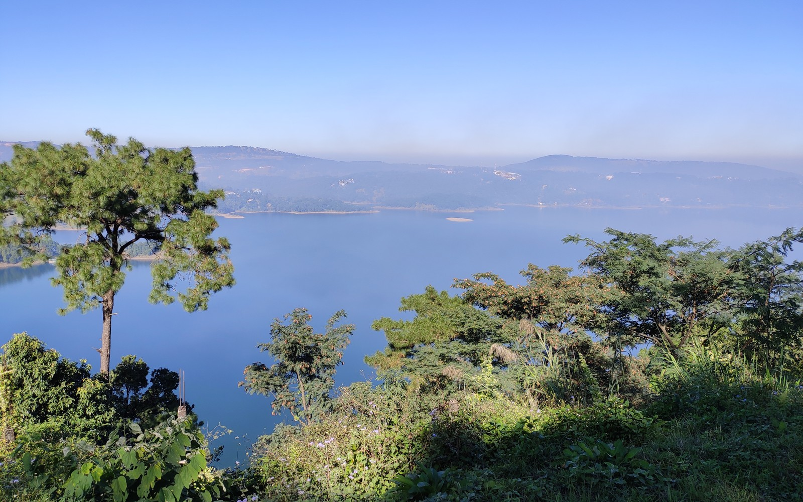
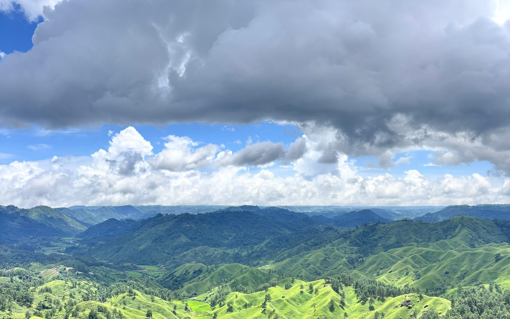

Day 1
Delhi NCR Departure to Umiam Lake & Shillong
05:30 AM • Departure Leg
Delhi NCR Departure → Delhi Airport (T3) → Guwahati
🚗 Drive: 1h 00m to DEL T3
⏱️ Flight: 2h 25m Direct
✈️ Flight DEL 07:20 → GAU 09:45
Pre-booked cab from home to T3. Direct morning flight lands at Guwahati Airport (GAU) at 09:45 AM. Your dedicated driver with Innova Crysta / Ertiga SUV meets your family at terminal arrivals.
Afternoon • Scenic Mountain Climb
Smooth 4-Lane NH6 Highway & Sunset at Umiam Lake
🚗 Drive: 2h 30m
⏱️ Shoot: 2h 00m
☀️ Solar Window: 03:30 PM – 05:15 PM (Golden Hour)
Ascend the well-paved 4-lane highway into the Khasi Hills. Arrive at Umiam Lake (Barapani) during the golden hour for sweeping water reflections, aerial drone wide-angles, and steaming ginger chai.
🏨 Night 1 Stay: Shillong / Umiam Lake Base
1 Night
💎 Budget Gem
Kaizun Bed & Breakfast (~₹2,600/nt) — Clean family suites, pine residential area, geyser & heater
⭐ 3★ Sweet Spot
Hotel Heiga VNS (~₹4,200/nt) — Modern 3★, elevator, plush triple bed, electric heater, parking
✨ Scenic Mid-Range
Hotel Windermere Resort (~₹6,200/nt) — Pine ridge garden retreat, large wooden rooms
💡 Driver Coordination: Dedicated vehicle & driver remains with your family from airport pickup through final drop.
⚡ Active Trekker Alternative
02:30 PM – 04:30 PM (2-Hr Window)
Umiam Watersports Island Kayaking & Shoreline Scramble
Adventurous travelers can rent kayaks to cross to the isolated island pine ridge or scramble along the rugged eastern shoreline boulders.

🔍 Click to enlarge
Golden Hour Reservoir
Umiam Lake (Barapani)
Vast azure reservoir framed by forested Khasi pine hills at golden hour

🔍 Click to enlarge
Scenic Highway Descent
Gentle Highland Ridges
Pine meadows welcoming travelers along the highway descent